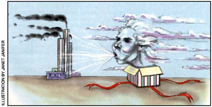

Under the Clean Air Act Amendments of 1990, coal-burning electric power plants must have "permission" to emit sulfur dioxide (SO 2 ), the chief culprit in acid rain. This permission is granted by way of allowances, a limited number of which are sold annually by the Environmental Protection Agency. Each allowance represents one ton of S0 2 , meaning if a power plant purchases ten allowances, it can emit ten tons of the polIutant.Once bought, allowances can be cashed in, resold or banked for later use. The good news is that not just electric companies but anyone can purchase allowances, thereby keeping the right to pollute out of the hands of the utilities and S0 2 out of the air.
The Clean Air Conservancy, a national, nonprofit agency, is making shopping easy. You can arrange to buy part or all of a ton (any size purchase is welcome) by calling 1-800-2-BUY-AIR or visiting the Web at cleanairconservancyorg. In return, the Conservancy will mail you a certificate fit for framing, announcing the amount of S0 2 that has been purchased and retired in your gift recipient's (or your) name.
A ton of S0 2 sells for approximately $200, but represents nearly $4,000 worth of damage to human health and the environment, making it a real bargain. And best of all, its tax-deductible. A perfect fit for everyone on your shopping list, clean air is the one gift they won't take back.
-MargueriteLamb
|
 |
|
|